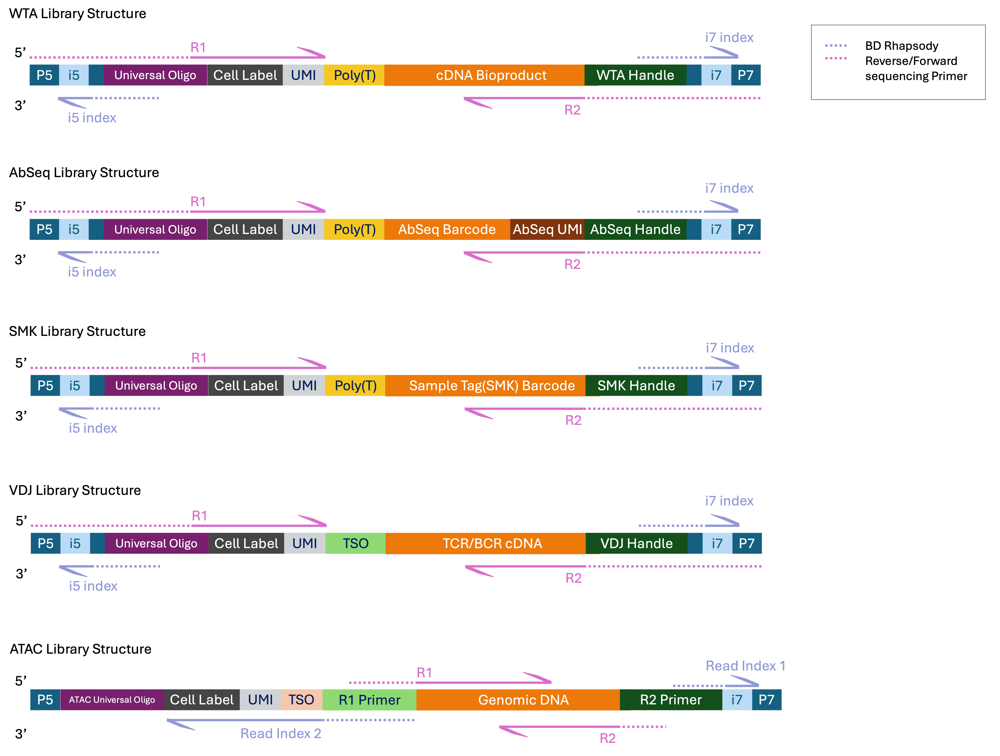

Quick Instruction
Listed below are the important steps to use this sequencing Calculator.
-
Enter your Project Name and UserName
This allows you to keep track of the results for future reference. -
Enter Number of Plexity
This depends on how many library you want to pool together. Can be up to 50 libraries. - Submit.A new section will appear below.
-
Enter the final Library concentration in nM:
Without this information, you can't proceed. The Library pooling calculation is dependent on the concentration needed to pool the library. If unsure, please speak to our FAS or your sequencing facility/provider. -
Enter the Final Pooled Volume:
This is usually the amount of pooled library requested by the sequencing facility. Please contact our FAS or your sequencing facility/provider if you are unsure. -
Enter details in the table.
- Hover over table header to see the hint of each parameters.
- After selecting each Assay Type, hover over icon in table cells to see recommendation for specific assay type.
- Click Calculate to submit the table for calculation
- The table result section will appear below.
- Click the copy button and paste the result in Excel file.
BD Rhapsody Library Information
This section will show table for sequencing recommendation with Rhaspsody library, as well as the read structure and reads requirements. Please note this might be different when you are using Beads Version1. Please consult your local FAS for recommendation for Bead Version 1.
| Library | Read 1 (bp) | Read 2 (bp) |
|---|---|---|
| WTA | 51 cycle | 71 cycle |
| WTA + AbSeq | 51 cycle | 71 cycle |
| WTA + SMK | 51 cycle | 71 cycle |
| WTA + AbSeq + SMK | 51 cycle | 71 cycle |
| Targeted | 51 cycle | 71 cycle |
| Targeted + AbSeq | 51 cycle | 71 cycle |
| Targeted + SMK | 51 cycle | 71 cycle |
| Targeted + AbSeq + SMK | 51 cycle | 71 cycle |
| Library | Minimum read length | Recommended read length | Optimal read length | |||
|---|---|---|---|---|---|---|
| Read 1 (bp) | Read 2 (bp) | Read 1 (bp) | Read 2 (bp) | Read 1 (bp) | Read 2 (bp) | |
| VDJ Next | 65 cycle | 150 cycle | 150 cycle | 150 cycle | 85 cycle | 215 cycle |
| VDJ Next + mRNA + SMK | 65 cycle | 150 cycle | 150 cycle | 150 cycle | 85 cycle | 215 cycle |
| VDJ Next + mRNA + AbSeq | 65 cycle | 150 cycle | 150 cycle | 150 cycle | 85 cycle | 215 cycle |
| VDJ Next + mRNA + AbSeq + SMK | 65 cycle | 150 cycle | 150 cycle | 150 cycle | 85 cycle | 215 cycle |
| Library | Read 1 (bp) | Read 2 (bp) |
|---|---|---|
| VDJ CDR3 | 75 cycle | 225 cycle |
| VDJ CDR3 + Targeted | 75 cycle | 225 cycle |
| VDJ CDR3 + Targeted + SMK | 75 cycle | 225 cycle |
| VDJ CDR3 + AbSeq | 75 cycle | 225 cycle |
| Library | Read 1 (bp) | Read 2 (bp) | Index 1 (bp) | Index 2 (bp) |
|---|---|---|---|---|
| ATAC only | 50 cycle | 50 cycle | 8 cycle | 60 cycle |
| ATAC library need to be sequence independently. User may pool multiple ATAC libraries together, but not with other types of library. | ||||
User Information
Required: This project name will be printed on your result output.
Required: Name of the person will be printed on your reesult output.
Required: (Max 50) Numbers of libraries for pooling